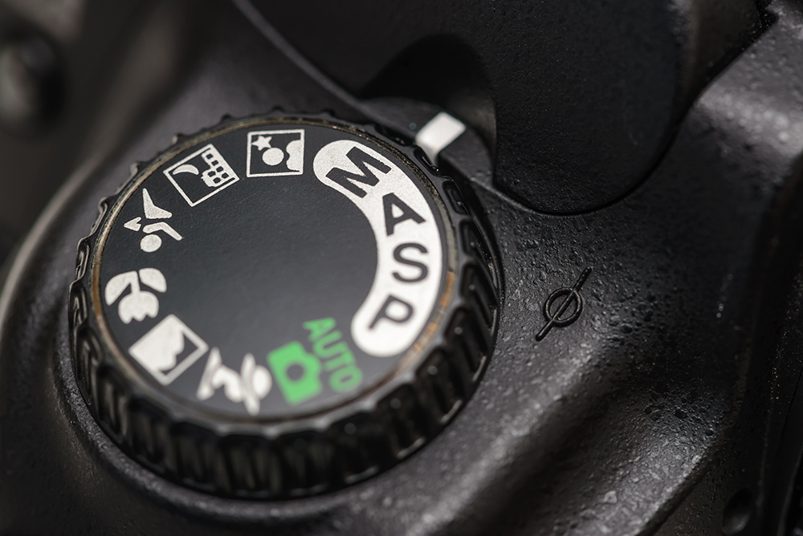

11 Oct 2019
Author : Sirawit Pokha
นอกเหนือจากโหมดอัตโนมัติสีเขียวกับโหมดที่เป็นรูปฉาก(ซีท)ต่าง ๆ แล้ว กล้องเรามักจะมี 4 โหมดเหล่านี้ที่เป็นตัวอักษรมาด้วย โหมดเหล่านี้แปลกกว่าชาวบ้านเขายังไง ทำไมต้องเป็นตัวอักษรภาษาอังกฤษ เราจะมาดูกัน
1. โหมด P (Program)
โหมดที่มีการทำงานคล้ายกับ Auto มาก กล้องจะคิดทุกอย่างให้แต่จะอนุญาตให้เราตั้งค่าบางอย่างได้ตามใจ เช่น ISO (ค่าความไวแสง), White Balance (แสงสุมดุลสีขาว), ค่าชดเชยแสง หรือแม้แต่โปรไฟล์สีของการถ่ายภาพ (Picture Style) สถานะการณ์ที่เหมาะจะใช้โหมด P เหมือนกับโหมด Auto ทุกอย่าง เพียงแต่ค่าที่เราปรับแต่งเพิ่มจะส่งผลต่อภาพที่ออกมาด้วย เป็นโหมดที่ควรฝึกใช้เพื่อเรียนรู้การทำงานของกล้องก่อนจะเริ่มใช้โหมดที่เริ่มให้เราปรับได้ยืดหยุ่นมากกว่านี้ ถ้าเรารู้จักกล้องของเรามากขึ้น เราก็สามารถคุมภาพที่ออกมาได้มากขึ้นไปด้วย
2. โหมด A/Av (Aperture Priority)
โหมดนี้สำหรับคนที่ต้องการค่ารูรับแสงที่คงที่ (ค่า F) เมื่อเราตั้งค่ารูรับแสงไว้แล้ว ค่าอื่น ๆ กล้องจะเซ็ตให้เราเอง โดยที่เราอาจจะใช้การเซ็ต Auto อื่น ๆ ร่วมได้ เช่น ค่า ISOเป็นต้น ส่วนใหญ่คนที่ถ่ายภาพ Portrait จะเลือกแบบนี้ เน้นการคุมความชัดตามที่ต้องการ ส่วนที่เหลือให้กล้องจัดการ สถานการณ์ที่เหมาะจะใช้โหมด A การถ่ายภาพ Portrait ครับ ส่วนใหญ่เน้นการทำให้หน้าชัดหลังเบลอ เราก็จะเปิด F1.4, F1.8 ค้างไว้ ส่วนที่เหลือให้กล้องเลือกให้เรา
3. โหมด S/Tv (Shutter Priority)
โหมดนี้กล้องจะให้ความสำคัญกับ Shutter Speed เป็นหลัก โดยเราสามารถกำหนดค่า Shutter Speed ที่ต้องการไว้ ส่วนที่เหลือกล้องจะจัดการให้กับเราเองครับ เราอาจจะใช้การเซ็ต Auto อื่น ๆ ร่วมได้ เหมือนข้อก่อนหน้านี้ เช่น ค่า ISO เป็นต้น สถานการณ์ที่เหมาะจะใช้โหมด S การถ่ายภาพ Sport ต่าง ๆ เราก็จะเซ็ตค่า Speed Shutter ที่สูงค้างไว้เลย (ค่าเวลาน้อยมาก ๆ) หรือการถ่ายภาพที่ต้องการค่า Speed Shutter ต่ำคงที่เพื่อใช้ลากเส้นไฟถนน (ค่าเวลามาก) เราก็สามารถเลือกตรงนี้ค้างไว้ได้เช่นเดียวกัน
4. โหมด M (Manual)
โหมด M สำหรับคนที่ชำนาญแล้ว และก็รู้ว่าการควบคุมแต่และแบบในสไตล์ของตนเอง แบบไหนที่เข้ากับสิ่งที่ต้องการมากที่สุด เราสามารถปรับตั้งค่าทุกอย่างได้อิสระ ทั้งความเร็วชัตเตอร์, ค่าความไวแสง, รูรับแสง และอื่น ๆ ที่ต้องการได้อย่างอิสระ บางครั้งอาจจะเลือกการตั้งค่า Auto ในบางส่วนได้เช่น Auto ISO แบบที่ลิมิต ISO สูงสุดที่รับไว้ได้ สถานการณ์ที่เหมาะจะใช้โหมด M
สถานการณ์ที่เหมาะจะใช้โหมด M ได้หมด(ถ้าเราสดชื่น) ถ้าเรารู้ว่าการตั้งค่าของกล้องให้เข้ากับสถานการณ์นั้น มักจะเป็นการถ่ายภาพที่ไม่ต้องการเปลี่ยนแปลงค่าบ่อยนัก เช่น ถ่ายภาพสินค้า หรือแฟชั่นในงานสตูดิโอ หรือจะเอามาใช้ในการถ่ายภาพปกติก็ได้ถ้าเราถนัดการเซ็ตค่าแบบนี้